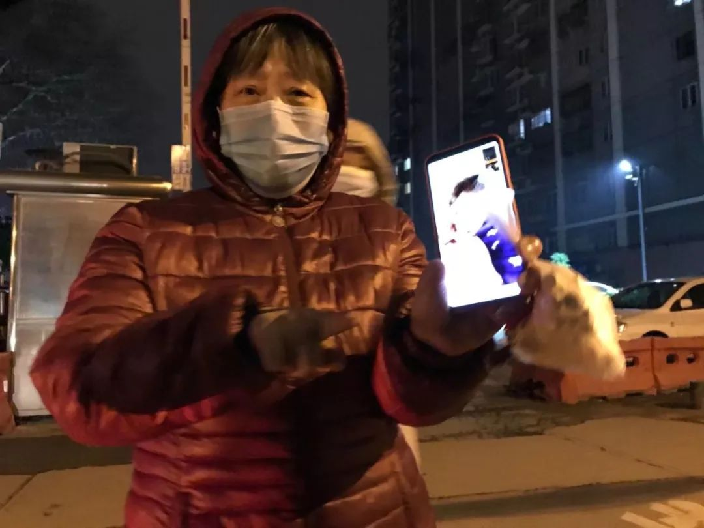
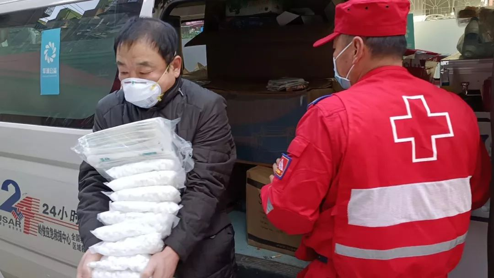

武汉封城以来，聋人逗逗君的感受
原文链接 备份链接 武汉新型冠状病毒，守语者一直奔赴在一线，直到今天，守语者决定要退居二线了。 从2020年1月22日起，我就没有好好地休息过，当然很多人也都没有好好休息过，但这十几天下来，我真的觉得心力交瘁，似乎比我平常工作一年还要让人 …
***** *****
*****
*****在武汉，登记在册的听障人士有1.3万人。对这个群体而言，听力的阻隔带来不少困难，他们资讯获取滞后，对疫情的反应比正常人慢，防护物资也告急，甚至求援都成难题。武汉市聋协2月11日的统计中，在汉聋哑人已有7例确诊，9例疑似，另有2例病逝。*****

“守语者”志愿者在物资派送过程中。受访者供图
文 | 新京报记者 魏芙蓉 实习生 杜萌
编辑｜陈晓舒 校对 | 付春愔
►本文约4598字，阅读全文约需9分钟
2月10日，一张戴着氧气面罩的苍白面庞出现手机屏幕上时，志愿者卢小强被吓得倒吸一口凉气。屏幕里，43岁的徐银文一身蓝白条纹相间的病号服，周围病床环绕。
聋哑人徐银文因急性阑尾炎在武汉市中心医院入院治疗已6天，这天，核酸检测结果呈阳性，他确认感染新冠肺炎，转入后湖院区。
“我要口罩 20个”，这通视频，徐银文希望为妻儿准备20个口罩，“没有口罩，他们怎么来医院看我？”他有点着急，用手语表达着。
在武汉，登记在册的听障人士有1.3万人。对这个群体而言，听力的阻隔带来不少困难，他们资讯获取滞后，对疫情的反应比正常人慢，防护物资也告急，甚至求援都成难题。武汉市聋协2月19日的统计中，在汉聋哑人已有24例确诊，10例疑似，6例死亡。
当下，“如何帮助武汉聋哑人”成为30岁的崔竟现在最为棘手的问题。她也是一名听障人士，另一个身份是“守语者”公益小组的负责人，这个组织致力于改善听障人群沟通状况，团队成员也多为聋哑人，因为精通手语，且文字能力尚好，疫情期间，崔竟带领卢小强在内的7名志愿者，为武汉受困的聋哑人群提供定向帮扶。
聋哑病人

入院的第一天，徐银文就感受到不便利。陪床的弟弟短暂离开的半个小时里，有护士进来询问，他未做一字回应。
“（哥哥）是外地人吗，好像听不懂本地话？”护士在弟弟返回病房后问道。此后每当穿着防护服的医护人员进入病房，弟弟都会解释哥哥徐银文的特殊情况。
确诊新冠肺炎转入后湖院区后，家属再不能陪床。一个人住院期间，徐银文和医护人员的交流全部依靠纸笔。
“聋哑人就医不易”，崔竟深有体会，疫情之前，她时常受聋哑人病患委托前往医院做手语翻译，借助助听器，她可以把医生的话用手语转达给病患。医生的专业词汇和病人的病症表达对双方而言都是困难所在，崔竟在翻译过程中也会格外注意准确。
但没有了手语翻译，大部分听障患者只能通过读唇、观察对方表情来辅助沟通。但防护衣和护目镜断送了这一可能，对于不擅书面语写作的徐银文来说，纸笔费时费力，却是当下唯一可行的沟通方式。
和家人的沟通也只能通过微信消息。徐银文打字慢、句式短，很多表达需要用图片替代。对家人，他报喜不报忧，每天的餐食、药品等都被他拍下照片传给家人，表达：自己营养均衡、恢复良好。
但是在打给志愿者卢小强的视频里，徐银文却难抑忧虑，他用手语告诉卢小强：因为自己在医院表达困难，和医护人员纸笔交谈有些内容看不懂，便不懂装懂。
“不懂装懂是聋哑人最常见的表现”，崔竟说，就疫情期间聋哑人的就医问题，“如何找到一种方式实现安全性和实用性的平衡？”她曾考虑过视频在线翻译，但最终因为实用性不佳而搁置计划。
疫情下的武汉，对聋哑群体而言，听力的阻隔带来不少困难。不仅是就医困难，他们连基本的资讯获取都比正常人滞后，对疫情的反应也来得晚。防护物资告急，甚至求援都成难题。
30岁的崔竟出生在聋哑人家庭，父母都是聋哑人，崔竟在依靠助听器获得听力后，文字能力和资讯获取能力与正常人无异。
她的另一个身份是武汉“守语者”公益小组的负责人，在她900名微信好友中，聋哑人士超过六成。自1月22日以来，她不断收到来自聋哑人群的线上咨询，“我的社区在哪里？”“怎么在网上买口罩？”“残联电话，我要怎么打？”
“因为交流的不便，在过去很多聋哑人几乎是与社区脱离的。”崔竟还提到，因为疫情而不得不面临的线上购物、快递收付等问题，也在很多中老年聋哑人的生活习惯之外。
“他们对疫情反应迟缓”
**
“守语者”的抗疫行动，便是从新闻资讯的普及开始的。“守语者”和其他公益团队先后翻译制作了“如何居家隔离”、“如何预防粪口传播”、“如何使用防疫物资”等多条手语视频。这些都是崔竟挑选的“实用”、“权威”、“重要”的资讯。
2月5日，崔竟在朋友圈发布了一条手语视频。这一天，她被朋友告知，朋友的聋人父亲不顾家人劝阻聚众打麻将，直到家人无奈报警，数位聚众打麻将的聋哑人才被遣散。
视频里，崔竟眉头紧蹙、手势飞快，用手语强调：“疫情严重，人传人，聚众打麻将易感染，明知故犯，无异于犯罪！”
在武汉，登记在册的听障人士有近万人。聋人圈子小，事情传得快，聚众打麻将的聋人父亲一天接了数个视频电话。他一进门就挥舞双手跟女儿吵起来：“全武汉的聋人都跑来跟我视频讲道理！”

崔竟制作的手语视频截图。受访者供图
这都归结于聋哑人群体对疫情的反应迟缓，从疫情的刚开始，他们获取资讯就显得比正常人要滞后许多。
1月20日前后，在钟南山发布新冠肺炎“人传人”后，崔竟已然重视起来，除夕夜的“团年饭”，亲戚齐聚，在她的强调下，菜盘和火锅盆里都备好了公筷。
她不断把相关的新闻资讯分享到家族群和聋哑人群里，告知大家要防护。但得到回应却是——“小题大做”，她的聋哑人父母并没有当回事；而在同城的聋哑人微信群里，崔竟的建议不但没有被重视，甚至被指“添乱”。
1月23日，武汉关闭离汉通道，市内公共交通暂停。不少老年聋哑人在这天出门乘公交，发现公交久等不至，来群里询问，被群友一通视频电话解释之后，这才明白出了什么事。
卢小强是“守语者”的线上志愿者，他发现，自己的聋哑人母亲同样信息滞后。平日里54岁的母亲独自在家，卢小强忙于工作，此前未曾跟母亲强调任何疫情资讯。直到1月23日，卢小强从外地回到老家，母亲才问起他，“为什么外面很多人都戴起了口罩？”
“守语者”针对聋哑人的疫情需求登记工作中，问到“为什么没有及时准备物资？”得到的回答几乎如出一辙：“新闻频率太快，没有手语翻译”；“我们聋人看不懂新闻，不清楚外面发生什么事，等反应过来，所有的药店都买不到口罩了”。
崔竟说，在聋哑人群体中，中老年聋哑人资讯尤为落后，“他们更喜欢看手语，对文字理解能力会不及年轻聋哑人”。
最让她放心不下的是66岁的大姨，聋哑、独居，住所位于汉口火车站附近，那里确诊人数多，是疫情“高危地”。而且大姨从不使用网络，几乎与所有的新闻资讯绝缘。
崔竟唯一的办法是每天用短信和大姨保持联系，在了解老人的身体状况的同时帮她普及疫情资讯。即使如此，2月14日，大姨还是瞒着崔竟出门了，并在事后表示惊讶，“店铺怎么都关门了？”
崔竟气极了，大姨至今仍不明白疫情“轻重”，但细想之下她又觉酸楚，还有多少聋哑人有着和大姨一样的处境呢？

2月10日，崔竟和志愿者在物资派送的过程中。受访者供图
无声的救援
2月初，由崔竟主导，三位听人（听力正常的人）、五名聋人组成的抗疫队伍临时集结了起来，计划在疫情期间为受困的湖北聋哑人提供支持。
“看到找到我的老年聋哑人，我会想起独自在家的大姨，我老去的聋人父母，还有我自己。”事后，崔竟在“守语者”公众号提到这次志愿活动的初衷。
8名成员精通手语且文字能力尚好，均来自“守语者”公益小组，这一组织由崔竟在2014年创立，旨在为听觉特殊的人群创造平等沟通的机会。
行动之初，为摸清聋哑人群的困难和需求，“守语者”和其他志愿团队合作，一份面向湖北残障人士的问卷在网络发放。但事后崔竟发现，回收的200余份问卷中，只有一份是来自聋哑人。
事实上，“听”“说”的障碍无处不在，“寻求帮助的聋人很多是完全使用手语的、且文字能力不太好的，在他们的日常生活中，问卷很少见，基本上不会遇到，他们也不会填写。”崔竟在事后总结。
2月8日，募集到一批物资后，崔竟在“守语者”的微信公号上发布一则自己录制的手语视频，她鼓励有困难的湖北聋哑人士报名申领物资、进行需求登记。
与以往不同的是，填写问卷不再是唯一渠道，添加志愿者的微信后，聋哑人士可以直接和志愿者视频进行需求登记，有三名志愿者20小时在线提供手语沟通支持。
不到两天的时间里，超过150名聋哑人前来求援。在崔竟的统计中，求助者有95%都是老年人，“他们以手语作为母语，在文字交流上存在较大困难”，这些老人，后来成为崔竟和志愿者们主要的帮扶目标。

求助者收到志愿者派送的物资。受访者供图
2月9日这天，视频通话不断，志愿者卢小强有些应接不暇，经常是在打字的过程中，文字还没发出，他就被突然弹出的视频电话邀请“抖”进了新的聊天界面。
电话接通，不出意外，屏幕上大多是中老年人的脸。在卢小强例行的文字询问中，老人往往文字回复速度慢，句式短，大多更习惯手语沟通。这时候卢小强就会主动邀请对方进行视频通话。
“我要检查针”，9日，微信上一名聋人向卢小强发来文字。
“检查针？”卢小强心里疑惑，立即发出了视频邀请。
“发热去医院，检查用到”，举起手机面对面的时候，这名聋哑老人用手语跟他解释，“不知道叫什么词，看起来像一根针”，老人补充。卢小强明白了，是体温计，他也了解到，老人71岁了，夫妻都是聋哑人，儿女不在身边。
驶向聋哑人的物资车
多日来，8名志愿者帮助的中老年聋哑人有百余名，虽然数量不大，但过程并不容易。
有聋哑人快递丢件，打来视频求助，崔竟需要和对方花费1小时回溯派件过程，最后发现问题出在数天前，因为聋人无法听到来电提示，忽略了派件信息；一个46岁的聋人在丰巢的快递柜前犯了难，崔竟通过微信视频在线“教学”，花费半小时，对方才终于取回了快递；即使是关于快递单号的修改，只要打开视频手语交流，往往也要花费半小时……
此前崔竟募集到一批爱心物资，因为沟通疏忽导致它们均以到付的方式被寄往武汉各聋哑申请人家中，而“守语者”服务的中老年聋哑人大多不会接收快递，更别说到付。崔竟在第一时间要来了所有的快递单号，以便随时跟踪进程。
同城的物资派送，崔竟会尽量避免使用快递；如果遇上给聋人寄件，崔竟一定会在收件人名字后面备注：聋人，请发信息。
2月10日，在收到中国红十字会基金会救援分队捐赠的一批物资后，崔竟决定第一时间内派送给求助的聋哑人士。

“守语者”志愿者接受中国红十字会基金会救援分队捐赠。图源受访者
崔竟的聋人父亲不放心，也跟着一起出了门。一辆鄂A牌的物资车，贴上了社区开具的通行证，载着父女俩和志愿者三名听障者，横跨武汉的各个城区。
一路上，负责联系的崔竟忙个没停，“完全没办法将视线移开手机”。
不管什么时候，“通知”对聋人而言都是个大问题。是发短信呢还是打电话？“电话铃声听不到，如果手机不在身边，不论如何我们都是无法联系上聋人的”，如果短信通知就意味着更长的时耗，因而这一天，崔竟需要提前几个小时联系聋人，视频电话不接就一遍遍发短信，以确保他们在派送的时间段注意手机。
考虑到潜在的交叉感染风险，派送物资的过程避免直接接触，84消毒片和口罩往往会由崔竟的父亲提前放置在小区的板凳上、窗户口、路灯下等一些固定位置，待对方赶来取走后，再由崔竟在安全距离内当场用手语告知其使用方法。

派送前，崔竟和父亲在分配物资。受访者供图
在到达武汉市汉阳区赛博园小区门口后，崔竟站在远处，看见自己事先放置在门卫处的袋装84消毒片被对面的人拿到手后，这才走近。眼前的女人一身黑棉衣，露出红色家居裤，借着车前灯，崔竟在距离她2米左右的位置停住脚步。
“一颗消毒片，一瓶水，500ml，静置完全溶解。”崔竟打着手语，一个空的矿泉水瓶被她紧握在手，作出84消毒片的使用示范。
“谢谢你”，对面的女人也挥手回应，“注意安全”。
类似的无声对话重复在武汉的各个小区上演，从下午6点至凌晨1点，经过7小时的派送，84消毒片、口罩和体温计等物资最终被分赠给30个聋人家庭。
这是崔竟在疫情期间为数不多的一次外出，车辆载着她驶过武汉三镇，在城区中心的高架桥上，作为唯一行驶的车辆，崔竟第一次发现，高架桥一侧成幢的30层高楼房，家家户户都亮堂。而曾经的武汉中心城区，如今人车寥寥，崔竟戴着助听器的耳朵也听不到城市声响，她怀念起街市的热闹，还有每周二周五，在汉口江滩的手语角，那曾是聋哑人的盛事。
（文中徐银文为化名）
*洋葱话题*
*▼*
*****点击阅读原文，告诉我们你“封城”期间的故事*****
*后台回复关键词*****“洋葱君” ，加入读者群****
***推荐阅读***

十堰“战时管制”：五十名志愿者与五千名居民的自助生活
**疫情下的武汉咖啡馆：就算店垮了，最后一杯咖啡也要给医护人员
**

荆州第一例危重症新冠患者的生死十六天

*********既然在看，就点一下吧****** *********
*********
原文链接 备份链接 武汉新型冠状病毒，守语者一直奔赴在一线，直到今天，守语者决定要退居二线了。 从2020年1月22日起，我就没有好好地休息过，当然很多人也都没有好好休息过，但这十几天下来，我真的觉得心力交瘁，似乎比我平常工作一年还要让人 …
原文链接 备份链接 【财新网】（记者 吴红毓然）在战“疫”期间，一些明显有悖依法防控的举措暴露出来，引发强烈争议。（参见“特写|“战时”孝感：争议不断，谁在努力奔跑？”） 近期，一个视频流传于网络：在孝感一个乡村，有三人在家敞开门打麻 …
原文链接 备份链接 在小区门口、在居委会、在火车站出口……这些机关干部的身影活跃在在各处。 记者 | 应 琛 “您好，请出示一下出入证。再来测量一下体温，谢谢”，“您是到这里看望父亲的对吗？请到这边填一下登记表，再测量一下体温”……这些 …
原文链接 备份链接 虽然我自己是公务员，但我客观地评价，在这次抗击疫情的过程中，我们国家的这台大的机器，在应对突发危机的时候，运转起来还是很不错的。 口述 | 徐 理（化名） 整理 | 周 洁 我是一名普通的基层公务员，今年疫情发生后， …
原文链接 备份链接 我和子岚说，在这种黑暗的时候，哪怕一点点的善意，都能给别人带来温暖。哪怕只有一点点的光，也要努力去发出来，去照亮黑暗。 口述 | 余女士 整理 | 刘朝晖 我是子岚的妈妈，因为在快手上播出自己作为武汉市民日常抗疫生活 …